<!DOCTYPE html>
<html>

<head>
    <title>RL-MW Online Study 1</title>
    <meta http-equiv="Content-Type" content="text/html; charset=utf-8">
    <script src="jsPsych/jspsych.js" charset="utf-8"></script>
    <script src="plugins/jspsych-instructions-mm.js" charset="utf-8"></script>
    <script src="plugins/jspsych-countdown-mm.js" charset="utf-8"></script>
    <script src="jsPsych/plugins/jspsych-html-button-response.js" charset="utf-8"></script>
    <script src="jsPsych/plugins/jspsych-html-keyboard-response.js" charset="utf-8"></script>
    <script src="jsPsych/plugins/jspsych-fullscreen.js" charset="utf-8"></script>
    <script src="jsPsych/plugins/jspsych-survey-text.js" charset="utf-8"></script>
    <script src="jsPsych/plugins/jspsych-preload.js" charset="utf-8"></script>
    <script src="plugins/jspsych-2afc-reward-mm.js" charset="utf-8"></script>
    <script src="/assets/javascripts/jatos.js"></script>
    <script src="js/utils.js"></script>
    <link href="jsPsych/css/jspsych.css" rel="stylesheet" type="text/css">
    </link>
    <link href="css/plugins-mm.css" rel="stylesheet" type="text/css">
    </link>
</head>

<body>
    <script>

        /** ------------ PARAMETERS -------------- **/
        var debug = false;
        var fullscreen = true; 
        var nstim = 6; // number of stimuli
        var ntrials_per_stimpair = 20; // number of trials per stimulus pair
        var ntrials_per_stimpair_train = 1; // number of trials per stimulus pair
        var nprobes = 30; // number of thought probes
        var plusminus_probe = 5; // randomness in probe presentation (+/- trials every ntrials/nprobes)
        var nprobes_train = 5; // number of thought probes during training
        var plusminus_probe_train = 2; // randomness in probe presentation (+/- trials every ntrials/nprobes)

        if(debug){
         //   nstim=3;
           // ntrials_per_stimpair=1;
        }

        var ntrials = ntrials_per_stimpair * nstim*(nstim-1)/2; // number of trials: 10*(6*(6-1))/2=150
        var ntrials_train = ntrials_per_stimpair_train * nstim*(nstim-1)/2; 
        var ntrials_per_stim = ntrials_per_stimpair*(nstim-1); // number of trials per stimulus
        var ntrials_per_stim_train = ntrials_per_stimpair_train*(nstim-1); // number of trials per stimulus
        
        // calculate thought probe trials, always
        var probe_trials = Array(nprobes).fill().map(
            (v,i) => (i+1)*(ntrials/nprobes)+getRandomInt(0, plusminus_probe)).sort(
                function(a, b){return a - b}).map((v) => Math.min(v, ntrials));
        var probe_trials_train = Array(nprobes_train).fill().map(
            (v,i) => (i+1)*(ntrials_train/nprobes_train)+getRandomInt(0, plusminus_probe_train)).sort(
                function(a, b){return a - b}).map((v) => Math.min(v, ntrials_train));
        


        var reward_lower=0;
        var reward_upper=20;
        var randwalk_sigma=2;

        var stimdir = "stimuli/session1/";
        var stimdir_train = "stimuli/session2/";
        var stimuli = Array(nstim).fill().map((v,i) => `${ stimdir}/${ ++i }.jpg`);
        var stimuli_train = Array(nstim).fill().map((v,i) => `${ stimdir_train}/${ ++i }.jpg`);

        // random walks per stimulus (unchosen stimuli develop randomly as well each time they are shown)
        var rewards = Array(nstim).fill().map((v,i) => 
            getRandomWalk(ntrials_per_stim, randwalk_sigma, reward_lower, reward_upper) ); 
        var rewards_train = Array(nstim).fill().map((v,i) => 
            getRandomWalk(ntrials_per_stim_train, randwalk_sigma, reward_lower, reward_upper) ); 

        var stimpairs = []; // final list of randomized stimulus pairs
        for(k=0; k<ntrials_per_stimpair; k++){
            var cstimpairs = []; // only the current nstim*(nstim-1)/2 stimulus pairs
            for(i=0; i<(nstim-1); i++){
                for(j=i+1; j<nstim; j++){
                    cstimpairs.push(jsPsych.randomization.shuffle([i,j]) );
                }
            }
            // we shuffle each of the repetitions of the stimulus pairs separately
            // to avoid long runs where a stimulus is not shown
            cstimpairs = jsPsych.randomization.shuffle(cstimpairs);
            stimpairs = stimpairs.concat(cstimpairs);
        }
        //stimpairs = jsPsych.randomization.shuffle(stimpairs);

        var stimpairs_train = []; // final list of randomized stimulus pairs
        for(k=0; k<ntrials_per_stimpair_train; k++){
            var cstimpairs = []; // only the current nstim*(nstim-1)/2 stimulus pairs
            for(i=0; i<(nstim-1); i++){
                for(j=i+1; j<nstim; j++){
                    cstimpairs.push(jsPsych.randomization.shuffle([i,j]) );
                }
            }
            // we shuffle each of the repetitions of the stimulus pairs separately
            // to avoid long runs where a stimulus is not shown
            cstimpairs = jsPsych.randomization.shuffle(cstimpairs);
            stimpairs_train = stimpairs_train.concat(cstimpairs);
        }

        /* create timeline */
        var timeline = [];

        // preload all images
        var images = ['stimuli/knockedout.png', 'stimuli/ontask.png', 'stimuli/offtask.png', 'stimuli/thumbsup.png'];
        for(let i=1; i<=nstim; i++){
            images.push("stimuli/session1/"+i+".jpg")
            images.push("stimuli/session2/"+i+".jpg")
        }
        for(let i=0; i<=reward_upper; i++){
            images.push("stimuli/coinstack/"+i+".png")
        }
        var preload = {
            type: 'preload',
            images: images
        }
        timeline.push(preload);


        var check_misses_nback=3; // monitor missing responses backward
        var prolific_pid="undefined";
        var prolific_studyid="undefined";
        var prolific_sessionid="undefined";
        var uid = jsPsych.randomization.randomID(12);
        var datetime=Date().toLocaleString();

        /*
        // Browser check
        var browserInfo = getBrowserInfo();
          
        var stop_wrong_browser = {
            type: 'html-button-response',
            stimulus: `
            Sorry, this browser is supported. Please restart the experiment in Firefox or Google Chrome.
            `,
            choices: ['Got it'],
            on_finish: function(data){
                jsPsych.endExperiment("Sorry, browser is not supported.");
            }
        }
        if(!["Chrome","Firefox"].includes(browserInfo.browser)){
            timeline.push(stop_wrong_browser);
        }
        */


        /** ------------ /PARAMETERS -------------- **/


        var stimulus_template=function(imgpath){
            return(``);
        }
        var thoughtprobe_template=function(imgpath){
            return(``);
        }

        var feedback_stimulus_template=function(value){
            if(value=="timeout")
                return(`<div width='600px'>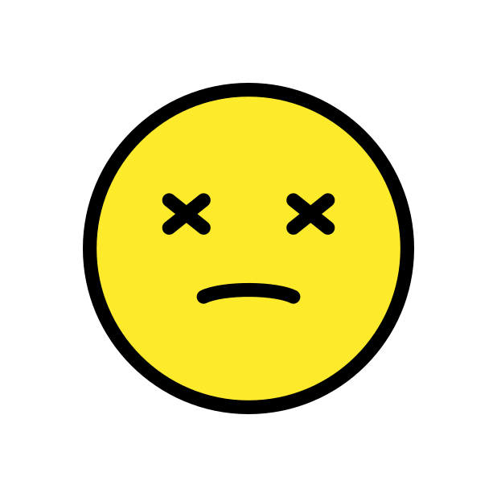</div>`);
            else if(value=="thumbsup")
                return(`<div width='300px'>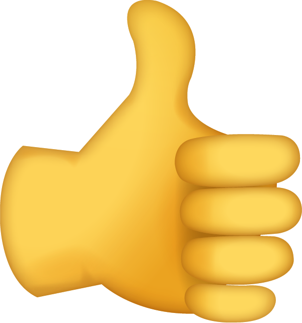</div>`);
            else 
                return(`<div style='position:relative;'>
                    
                    <div style='position: absolute; top: 50%; left: 50%; transform: translate(-50%, -50%); font-size: 100px; font-weight: bold;'>
                        ${ value }
                    </div>
                    </div>`);
        }

        var choicetrial = {
            type: "2afc-reward-mm",
            stimuli: jsPsych.timelineVariable('stimuli'),
            feedback_stimuli: jsPsych.timelineVariable('feedback_stimuli'),
            feedback_duration: 500,
            max_decision_time: 2000,
            total_trial_duration: 3600,
            width: "400px",
            distance: "50px",
            responses: {
                left: "f", 
                right:"j"
            },
            data: jsPsych.timelineVariable('data'),
            on_finish: function(data){
                if(!debug){
                    // check whether there were no responses for the last couple of trials
                    var tldat=jsPsych.data.get().filter({trial_type: "2afc-reward-mm"}).last(check_misses_nback).values();
                    var nresp=tldat.map(function(el){return(Number(el.selected!="none"))}).reduce((a,b) => {return a+b;})
                    //var grace=tldat.map(function(el){return(el.stopped_responding)}).reduce((a,b)=>{return a+b;});
                    if(tldat.length==check_misses_nback & nresp==0){
                        //jsPsych.pauseExperiment();
                        alert("You have failed to respond to the last couple of trials!\nPlease click 'OK' to continue.\n"+
                            "Note, however, that you will not get any credit if you fail to respond "+
                            "to the images!");
                        data.stopped_responding=1;
                    }
                }
            },
            extensions: []         
        } // choicetrial


        var thoughtprobe = {
            type: "2afc-reward-mm",
            stimuli: {left: thoughtprobe_template("stimuli/ontask.png"), 
                      right: thoughtprobe_template("stimuli/offtask.png")},
            feedback_stimuli: {
                left: feedback_stimulus_template("thumbsup"),
                right: feedback_stimulus_template("thumbsup"),
                timeout: feedback_stimulus_template("timeout")
            },
            feedback_duration: 500,
            max_decision_time: Infinity,
            total_trial_duration: 3600,
            width: "400px",
            distance: "50px",
            responses: {
                left: "f", 
                right:"j"
            },
            data: jsPsych.timelineVariable('data')
        }

        //timeline.push(thoughtprobe);

        var motivationprobe_template = function(emoji, label){
            return(`<div style='text-align:center;'><div style='font-size:120px;'>${emoji}</div><div style='font-size:18px; font-weight:bold; margin-top:10px;'>${label}</div></div>`);
        }

        var motivationprobe = {
            type: "2afc-reward-mm",
            stimuli: {left: motivationprobe_template("\ud83d\udcaa", "motivated"),
                      right: motivationprobe_template("\ud83e\udd37", "not motivated")},
            feedback_stimuli: {
                left: feedback_stimulus_template("thumbsup"),
                right: feedback_stimulus_template("thumbsup"),
                timeout: feedback_stimulus_template("timeout")
            },
            feedback_duration: 500,
            max_decision_time: Infinity,
            total_trial_duration: 3600,
            width: "400px",
            distance: "50px",
            responses: {
                left: "f",
                right:"j"
            },
            data: jsPsych.timelineVariable('data')
        }

        /** ------------ TASK SETUP -------------- **/
        var countdown={
            type: "countdown-mm",
            prompt: "Get ready for the task!",
            duration: 1000,
            countdown: 3
        }
        if (fullscreen) {
            timeline.push({
                type: "fullscreen",
                fullscreen_mode: true,
                message: "We are now going to switch to fullscreen to avoid distractions\
                while doing the task.<p>",
                button_label: "Continue"
            });
        }


        /** ------------ /TASK SETUP -------------- **/


        /** ------------ INSTRUCTION/TRAINING -------------- **/                

        var instructions_task = {
            type: 'instructions',
            pages:[
                `<h2>Welcome to this experiment!</h2>
                <p>In this task, you will see pairs of unfamiliar symbols.
                    Each symbol can give you a certain amount of points and you
                    should try to learn which symbol gives you most points. 
                <p>The symbols are Chinese letters and look like this:</p> 
                <p style="text-align:center;">
                    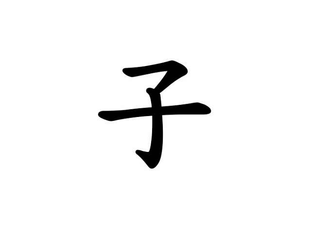
                    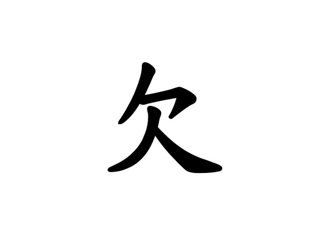
                </p>
                <p>Whenever you see two such symbols, you will have to choose one of them by
                    pressing one of two buttons.</p>
                <p>Press key "<b>F</b>" to select the <b>left</b> symbol.</p>
                <p>Press key "<b>J</b>" to select the <b>right</b> symbol.</p>
                `,
                `
                <div style="display:grid;grid-template-columns:300px 100px 300px;
                          align-items: center;justify-items: center;">
                    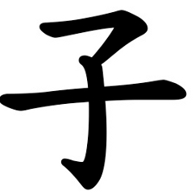
                    <div style="margin-bottom: 20px;"></div>
                    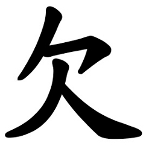
                    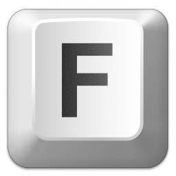
                    <div></div>
                    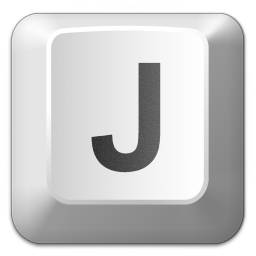
                    <p>Press key "<b>F</b>" to select the <b>left</b> symbol.</p>
                    <div></div>
                    <p>Press key "<b>J</b>" to select the <b>right</b> symbol.</p>
                </div>
                `,
                `
                <h2>How to get points</h2>
                <br>
                <div style="display:grid;grid-template-columns:300px 100px 300px;
                          align-items: center;justify-items: center;">
                    
                    <div></div>
                    
                    <b>15 points</b>
                    <div></div>
                    <b>7 points</b>
                </div>
                <p>
                <ul>
                <li>Each symbol has a <b>numerical value</b> that tells you how many points
                    you can earn with this symbol.</li>
                <li>The minimum number of points is <b>zero</b>. That means, you can never lose any points.</li>
                <li>The maximum number of points is <b>20 points</b>.</li>
                <li>During the task, you will not know beforehand how many points 
                    you will get for each symbol.</li>
                </ul>
                <p>
                In the above example, the left symbol would give you 15 points, and the right
                symbol would give you 7 points. In this case, it would therefore be better to
                select the left symbol.
                `,
                `
                <h2>Points change over time</h2>
                <br>
                <div style="display:grid;grid-template-columns:150px 50px 150px 50px 150px 50px 150px;
                          align-items: center;justify-items: center; margin-bottom: 20px;">
                    
                    <div style="font-size: 70px; color: red;">&rarr;</div>
                    
                    <div style="font-size: 70px; color: red;">&rarr;</div>
                    
                    <div style="font-size: 70px; color: red;">&rarr;</div>
                    <div style="font-size: 70px; color: black;">. . .</div>
                    <b>15 points</b>
                    <div></div>
                    <b>9 points</b>
                    <div></div>
                    <b>10 points</b>
                    <div></div>
                    <div></div>
                </div>
                <br>
                <ul>
                <li>The <b>value</b> of each symbol <b>will change gradually</b> during the task. 
                    This means, that a symbol can give you a different number of points each time you
                    see it.</li>
                <li>In the example, the symbol changes from 15 points to 9 points to 10 points.</li>
                <li>The changes are <b>very slow</b>. That means, if a symbol gives you many points
                    at one time, it is likely that it will give you many points the next time as well.</li>
                </ul>
                `,
                `
                <h2>Your goal in this task</h2>
                <br>
                <ul>
                <li><b>Your main goal</b> is to guess which of the two symbols will give you most
                    points and to select it by pressing the corresponding key. 
                <li>The points will <b>add up</b> so that you can increase your overall score by
                choosing the best symbol in each round.
                </ul>
                `,
                `
                <h2>There are many symbols</h2>
                <br>
                <div style="display:grid;grid-template-columns:250px 250px 250px;
                          align-items: center;justify-items: center; margin-bottom: 20px;">
                    
                    
                    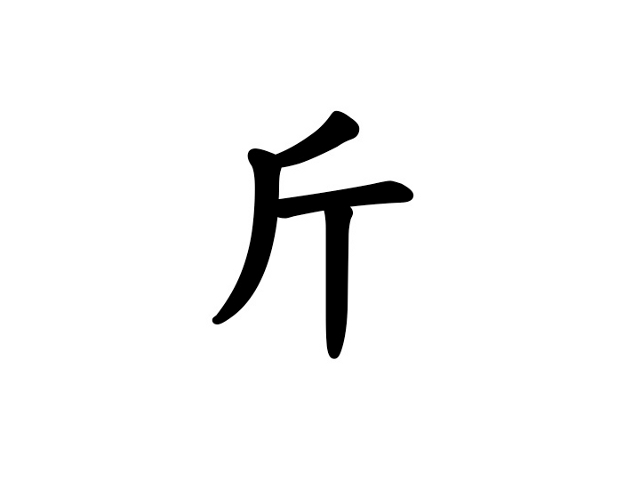
                    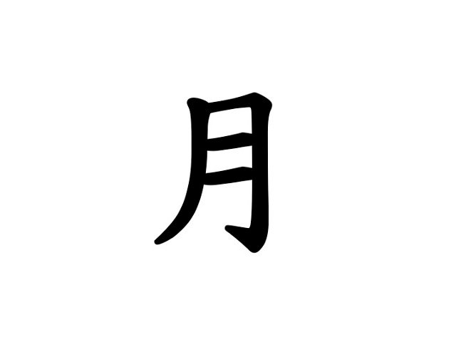
                    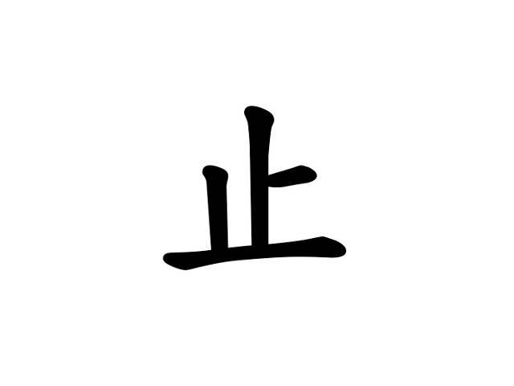
                    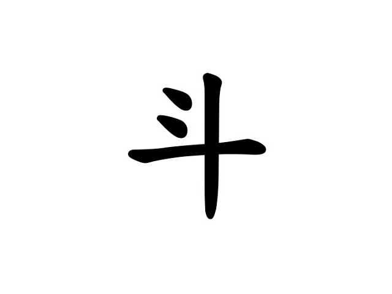
                </div>
                <ul>
                <li>There are <b>many different symbols</b> in this task. 
                    You will see a different pair of symbols in each round.
                <li>Each symbol has its own number of points.
                <li>The number of points for each symbol changes each time you see one of the symbols.
                </ul>
                `,
                `
                <h2>You have to make quick decisions</h2>
                <br>
                <p>You don't have much time to make a decision between the two
                    symbols - maximally 2 seconds. In case you are not fast enough, you will get a
                    "<b style='color: red;'>TIMEOUT</b>" feedback which looks like this:</p>
                <center></center>
                <p>Try to <b>avoid</b> this kind of negative feedback in order to collect
                    as many points as possible!</p>
                `,
                `
                <h2>Are you paying attention?</h2>
                <br>
                <p>
                All of us have moments where we are more focused and moments where we are less focused.
                This is normal and happens to everyone and it is not a problem for this task. Your earned points
                will not depend on your focus.
                <br>
                However, we would like to ask you to tell us whether you are currently focussed or
                thinking about something else. We will occasionally show you these two smileys:
                <div style="display:grid;grid-template-columns:300px 100px 300px;
                          align-items: center;justify-items: center;">
                    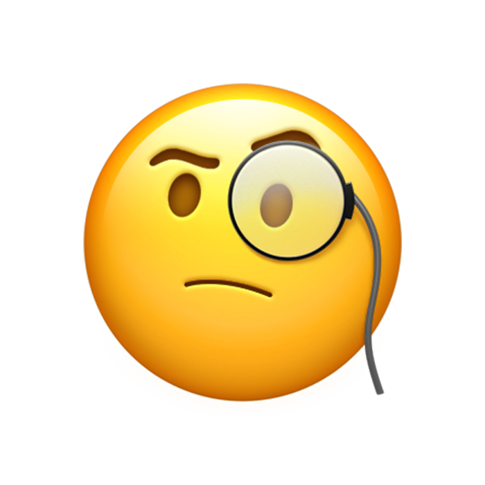
                    <div></div>
                    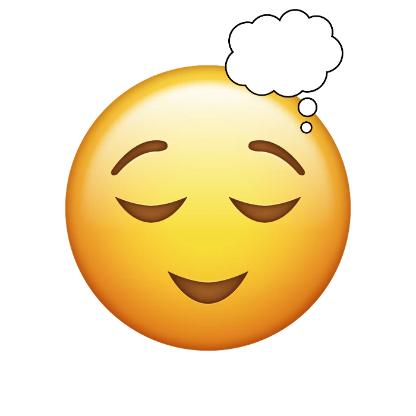
                    <b>(paying attention)</b>
                    <div></div>
                    <b>(not paying attention)</b>
                </div>
                and we would like you to tell us which one of the two smileys describes you best at the moment.
                If you are currently paying attention, please press the "<b>F</b>"-key. If you are currently
                not paying attention or mind wandering, please press the "<b>J</b>"-key.
                `,
                `
                <h2>How motivated are you?</h2>
                <br>
                <p>
                Right after each attention question, we will also ask you about your current <b>motivation</b>.
                You will see these two symbols:
                <div style="display:grid;grid-template-columns:300px 100px 300px;
                          align-items: center;justify-items: center;">
                    <div style='font-size:100px;'>&#x1F4AA;</div>
                    <div></div>
                    <div style='font-size:100px;'>&#x1F937;</div>
                    <b>(motivated)</b>
                    <div></div>
                    <b>(not motivated)</b>
                </div>
                <p>If you currently feel <b>motivated</b>, press the "<b>F</b>"-key.
                If you currently feel <b>not motivated</b>, press the "<b>J</b>"-key.</p>
                <p>Again, there are no right or wrong answers. Just tell us how you feel at the moment.</p>
                `,
                `
                <h2>Let's try!</h2>
                <br>
                <p>Let's try and get started with a practice session!</p>
                <p>Put your left index finger on top of the "<b>F</b>"-key and
                    your right index finger on top of the "<b>J</b>"-key.
                <div style="display:grid;grid-template-columns:300px 100px 300px;
                          align-items: center;justify-items: center;">
                    
                    <div></div>
                    
                    <p>Press key "<b>F</b>" to select the <b>left</b> symbol.</p>
                    <div></div>
                    <p>Press key "<b>J</b>" to select the <b>right</b> symbol.</p>                
                </div>
                <p>Click next to begin.</p>
                `
            ],
            show_clickable_nav: true
        }
        if(!debug)
            timeline.push(instructions_task);


        /** ------------ TRAINING  -------------- **/

        var stim_trialcount_train = Array(nstim).fill(0); // count how often each stimulus was shown
        var design_train = Array(ntrials_train); 
        var probe_count_train = 0;

        timeline.push(countdown);

        for(let i=0; i<ntrials_train; i++){
            var lstim=stimpairs_train[i][0];
            var rstim=stimpairs_train[i][1];
            design_train[i] = {};
            design_train[i].data={
                training: 1,
                trial: i+1,
                left: lstim,
                right: rstim,
                lreward: rewards_train[lstim][stim_trialcount_train[lstim]],
                rreward: rewards_train[rstim][stim_trialcount_train[rstim]]
            };
            design_train[i].stimuli={
                left: stimulus_template(stimuli_train[lstim]),
                right: stimulus_template(stimuli_train[rstim])
            };
            design_train[i].feedback_stimuli={
                left: feedback_stimulus_template(rewards_train[lstim][stim_trialcount_train[lstim]]),
                right: feedback_stimulus_template(rewards_train[rstim][stim_trialcount_train[rstim]]),
                timeout: feedback_stimulus_template('timeout')
            };

            timeline.push({
                timeline: [choicetrial],
                timeline_variables: [design_train[i]]
            });

            // show a probe?
            if(probe_trials_train[probe_count_train]==i){
                timeline.push({
                    timeline: [thoughtprobe],
                    timeline_variables: [{
                        data: {
                            training: 1,
                            trial: i+1,
                            probetrial: probe_count_train+1,
                            probe_type: "attention"
                        }
                    }]
                });
                timeline.push({
                    timeline: [motivationprobe],
                    timeline_variables: [{
                        data: {
                            training: 1,
                            trial: i+1,
                            probetrial: probe_count_train+1,
                            probe_type: "motivation"
                        }
                    }]
                });
                probe_count_train++;
            }

            stim_trialcount_train[lstim]++;
            stim_trialcount_train[rstim]++;
        }

        /*
        var train_block = {
            timeline: [choicetrial], //, show_data],
            timeline_variables: design_train
        }
        */

        //timeline.push(countdown);
        //timeline.push(train_block);


        /** ------------ /TRAINING  -------------- **/
        var instructions_after_training = {
            type: 'instructions',
            pages:[
                `
                <h2>Great job!</h2>
                <br>
                <p>You have completed the training session!</p>
                <ul>
                <li>Now, you will do the same task with different symbols for about 10-15 minutes.
                <li>Please try to concentrate and learn which symbol is the best by 
                    trying all of the symbols.
                <li><b>Don't forget!</b>: The number of points you get changes all the time!
                <li>Remember, your goal is to optimize your choices and get <b>as many points as possible!</b>
                <li>Please respond honestly when telling us about your attention, it will not affect your points.
                </ul>
                `,
                `
                <p>Click next to begin with the main task.</p>
                `
            ],
            show_clickable_nav: true
        }

        if(!debug)
            timeline.push(instructions_after_training);

        /** ------------ /INSTRUCTION/TRAINING -------------- **/                        


        /** ------------ MAIN EXPERIMENT -------------- **/

        var stim_trialcount = Array(nstim).fill(0); // count how often each stimulus was shown
        var design = Array(ntrials); 
        var probe_count = 0;

        timeline.push(countdown);

        for(let i=0; i<ntrials; i++){
            var lstim=stimpairs[i][0];
            var rstim=stimpairs[i][1];
            design[i] = {};
            design[i].data={
                trial: i+1,
                left: lstim,
                right: rstim,
                lreward: rewards[lstim][stim_trialcount[lstim]],
                rreward: rewards[rstim][stim_trialcount[rstim]]
            };
            design[i].stimuli={
                left: stimulus_template(stimuli[lstim]),
                right: stimulus_template(stimuli[rstim])
            };
            design[i].feedback_stimuli={
                left: feedback_stimulus_template(rewards[lstim][stim_trialcount[lstim]]),
                right: feedback_stimulus_template(rewards[rstim][stim_trialcount[rstim]]),
                timeout: feedback_stimulus_template('timeout')
            };

            timeline.push({
                timeline: [choicetrial],
                timeline_variables: [design[i]]
            });

            // show a probe?
            if(probe_trials[probe_count]==i){
                timeline.push({
                    timeline: [thoughtprobe],
                    timeline_variables: [{
                        data: {
                            training: 0,
                            trial: i+1,
                            probetrial: probe_count+1,
                            probe_type: "attention"
                        }
                    }]
                });
                timeline.push({
                    timeline: [motivationprobe],
                    timeline_variables: [{
                        data: {
                            training: 0,
                            trial: i+1,
                            probetrial: probe_count+1,
                            probe_type: "motivation"
                        }
                    }]
                });
                probe_count++;
            }

            stim_trialcount[lstim]++;
            stim_trialcount[rstim]++;
        }

        /*
        var exp_block = {
            timeline: [choicetrial], //, show_data],
            timeline_variables: design
        }*/

       // timeline.push(countdown);
        //timeline.push(exp_block);
        /** ------------ /MAIN EXPERIMENT -------------- **/

        var instruction_final = {
            type: 'html-button-response',
            stimulus: `
            <h1>Thank you!</h1>
            <p>Thank you for participating in this study and completing the experiment.</p>
            <p>Before you go, we would appreciate if you could answer a few questions 
                about your experience.</p>
            `,
            choices: ['Got it'],
            post_trial_gap: 1000
        }
        timeline.push(instruction_final);

        /** ------------ /open feedback --------------**/
        var comments = {
                type: 'survey-text',
                questions: [
                {prompt: 
                'Do you think the instructions were clear and easy to understand?', 
                rows: 10},
              {prompt: 
                'Do you have any comments or feedback for the experimenter?', 
                rows: 10}
          ]
        }
        timeline.push(comments);


        /** ------------ FINAL CLEAN UP -------------- **/
        if (!debug) {
            timeline.push({
                type: "fullscreen",
                fullscreen_mode: false,
                message: "Thank you for participating!<p>Press 'end experiment' to return to normal window mode.",
                button_label: "end experiment"
            });
        }

        // random walk with gaussian increments
        function getRandomWalk(n, sig, ll, ul) {
            var rw = new Array(n);
            // random start value
            rw[0] = getRandomInt(ll, ul);

            for (var i = 1; i < n; i++) {
                // gaussian increments
                inc = Math.round(gaussianRandom(0, sig));
                rw[i] = rw[i - 1] + inc;
                // "reflecting" boundaries
                if(rw[i]<ll){
                    rw[i]=ll+Math.abs(rw[i]-ll);
                }
                if(rw[i]>ul){
                    rw[i]=ul-Math.abs(rw[i]-ul);
                }
            }

            return rw;
        };

         // Standard Normal variate using Box-Muller transform.
         function gaussianRandom(mean=0, stdev=1) {
            let u = 1 - Math.random(); // Converting [0,1) to (0,1]
            let v = Math.random();
            let z = Math.sqrt( -2.0 * Math.log( u ) ) * Math.cos( 2.0 * Math.PI * v );
            // Transform to the desired mean and standard deviation:
            return z * stdev + mean;
        }
        /**
         * Returns a random integer between min (inclusive) and max (inclusive).
         * The value is no lower than min (or the next integer greater than min
         * if min isn't an integer) and no greater than max (or the next integer
         * lower than max if max isn't an integer).
         * Using Math.round() will give you a non-uniform distribution!
         */
        function getRandomInt(min, max) {
            min = Math.ceil(min);
            max = Math.floor(max);
            return Math.floor(Math.random() * (max - min + 1)) + min;
        }

        function getBrowserInfo() {
            var ua = navigator.userAgent, tem,
                M = ua.match(/(opera|chrome|safari|firefox|msie|trident(?=\/))\/?\s*(\d+)/i) || [];
            if (/trident/i.test(M[1])) {
                tem = /\brv[ :]+(\d+)/g.exec(ua) || [];
                return 'IE ' + (tem[1] || '');
            }
            if (M[1] === 'Chrome') {
                tem = ua.match(/\b(OPR|Edge)\/(\d+)/);
                if (tem != null) return tem.slice(1).join(' ').replace('OPR', 'Opera');
            }
            M = M[2] ? [M[1], M[2]] : [navigator.appName, navigator.appVersion, '-?'];
            if ((tem = ua.match(/version\/(\d+)/i)) != null)
                M.splice(1, 1, tem[1]);
            return { 'browser': M[0], 'version': M[1] };
        };
        /* start the experiment */
        jatos.onLoad(function() {// JATOS
            // get variables from prolific (or use local one)
            if(jatos.urlQueryParameters.hasOwnProperty("PROLIFIC_PID")){
                prolific_pid=jatos.urlQueryParameters["PROLIFIC_PID"];
            }
            if(jatos.urlQueryParameters.hasOwnProperty("STUDY_ID")){
                prolific_studyid=jatos.urlQueryParameters["STUDY_ID"];
            }
            if(jatos.urlQueryParameters.hasOwnProperty("SESSION_ID")){
                prolific_sessionid=jatos.urlQueryParameters["SESSION_ID"];
            }

            // record additional information to jsPsych data
            // this adds a property called 'uid' to every trial
            // also adds the prolific properties if they have been set
            jsPsych.data.addProperties({
                uid: uid,
                prolific_pid: prolific_pid,
                prolific_studyid: prolific_studyid,
                prolific_sessionid: prolific_sessionid,
                date: datetime,
                stopped_responding: 0
            });

            jsPsych.init({
                exclusions: {
                    audio: true
                },
                timeline: timeline,
                extensions: [
                ],
                on_finish: function () {
                    //jsPsych.data.displayData("csv");
                    var resultCsv = jsPsych.data.get().csv();
                    jatos.uploadResultFile(resultCsv, uid+"_result.txt")
                        .then(() => console.log("File was successfully uploaded"))
                        .catch(() => console.log("File upload failed"));

                        
                    var iadata = jsPsych.data.getInteractionData().csv();
                    jatos.uploadResultFile(iadata, uid+"_interaction.txt")
                        .then(() => console.log("File was successfully uploaded"))
                        .catch(() => console.log("File upload failed"));

                    var resultJson = jsPsych.data.get().json();
                    jatos.uploadResultFile(resultJson, uid+"_result_json.json")
                        .then(() => console.log("File was successfully uploaded"))
                        .catch(() => console.log("File upload failed"));

                    jatos.submitResultData(resultCsv, jatos.startNextComponent);
                },
                on_interaction_data_update: function (data) {
                    console.log(JSON.stringify(data))
                    if(data.event=="blur"){
                        jsPsych.pauseExperiment();
                    } else if(data.event=="focus"){
                        jsPsych.resumeExperiment();
                    }
                }
            });
        });
    </script>
</body>

</html>
